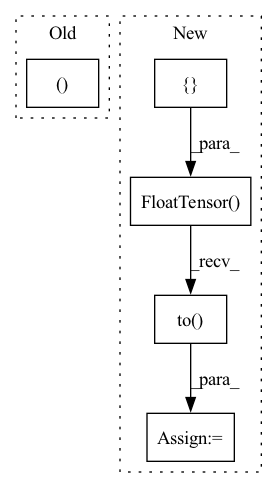

Pattern ID :17566

Before Change
if self.training:
// random pose on the fly
poses, dirs = rand_poses(B, self.device, radius_range=self.opt.radius_range, return_dirs=self.opt.dir_text, angle_overhead=self.opt.angle_overhead, angle_front=self.opt.angle_front, jitter=self.opt.jitter_pose, uniform_sphere_rate=self.opt.uniform_sphere_rate)
// random focal
fov = random.random() * (self.opt.fovy_range[1] - self.opt.fovy_range[0]) + self.opt.fovy_range[0]
After Change
fov = random.random() * (self.opt.fovy_range[1] - self.opt.fovy_range[0]) + self.opt.fovy_range[0]
else:
// circle pose
thetas = torch.FloatTensor([self.opt.default_theta]).to(self.device)
phis = torch.FloatTensor([(index[0] / self.size) * 360]).to(self.device)
radius = torch.FloatTensor([self.opt.radius_range[1] * 1.2]).to(self.device)
poses, dirs = circle_poses(self.device, radius=radius, theta=thetas, phi=phis, return_dirs=self.opt.dir_text, angle_overhead=self.opt.angle_overhead, angle_front=self.opt.angle_front)
In pattern: SUPERPATTERN
Frequency: 3
Non-data size: 5
Instances
Fragment ID: 58028485
Project Name: ashawkey/stable-dreamfusion
Commit Name: 6a4ae4221a34013e0713e00f2a8fe27fd7ae1650
Time: 2023-04-10
Author: ashawkey1999@gmail.com
File Name: nerf/provider.py
M Class Name: NeRFDataset
N Class Name: NeRFDataset
M Method Name: collate(2)
N Method Name: collate(2)
M Parent Class:
N Parent Class:
M File Name: nerf/provider.py
N File Name: nerf/provider.py
M Start Line: 209
M End Line: 219
N Start Line: 246
N End Line: 290
'>
Before Change
model_mean, posterior_variance, posterior_log_variance = self.q_posterior(
x_start=x_recon, x_t=x, t=t)
return model_mean, posterior_variance, posterior_log_variance
@torch.no_grad()
def p_sample(self, x, t, clip_denoised=True, repeat_noise=False, condition_x=None):
b, *_, device = *x.shape, x.device
After Change
def p_mean_variance(self, x, t, clip_denoised: bool, condition_x=None):
batch_size = x.shape[0]
noise_level = torch.FloatTensor(
[self.sqrt_alphas_cumprod_prev[t+1]]).repeat(batch_size, 1).to(x)
if condition_x is not None:
x_recon = self.predict_start_from_noise(
x, t=t, noise=self.denoise_fn(torch.cat([condition_x, x], dim=1), noise_level))
else:
'>
Fragment ID: 58028487
Project Name: janspiry/image-super-resolution-via-iterative-refinement
Commit Name: 12c2447fe9d989a51a1674b23fbb225c783186e5
Time: 2021-08-03
Author: lw_jiang@foxmail.com
File Name: model/modules/diffusion.py
M Class Name: GaussianDiffusion
N Class Name: GaussianDiffusion
M Method Name: p_mean_variance(5)
N Method Name: p_mean_variance(5)
M Parent Class: nn.Module
N Parent Class: nn.Module
M File Name: model/modules/diffusion.py
N File Name: model/modules/diffusion.py
M Start Line: 171
M End Line: 173
N Start Line: 135
N End Line: 150
'>
Before Change
model_mean, posterior_variance, posterior_log_variance = self.q_posterior(
x_start=x_recon, x_t=x, t=t)
return model_mean, posterior_variance, posterior_log_variance
@torch.no_grad()
def p_sample(self, x, t, clip_denoised=True, repeat_noise=False, condition_x=None):
b, *_, device = *x.shape, x.device
After Change
def p_mean_variance(self, x, t, clip_denoised: bool, condition_x=None):
batch_size = x.shape[0]
noise_level = torch.FloatTensor(
[self.sqrt_alphas_cumprod_prev[t+1]]).repeat(batch_size, 1).to(x)
if condition_x is not None:
x_recon = self.predict_start_from_noise(
x, t=t, noise=self.denoise_fn(torch.cat([condition_x, x], dim=1), noise_level))
else:
'>
Fragment ID: 58028486
Project Name: janspiry/image-super-resolution-via-iterative-refinement
Commit Name: e4bf6add27ee36067514a0b3debcd3bf98dbaa17
Time: 2021-08-03
Author: jiangliangwei@tetras.com
File Name: model/modules/diffusion.py
M Class Name: GaussianDiffusion
N Class Name: GaussianDiffusion
M Method Name: p_mean_variance(5)
N Method Name: p_mean_variance(5)
M Parent Class: nn.Module
N Parent Class: nn.Module
M File Name: model/modules/diffusion.py
N File Name: model/modules/diffusion.py
M Start Line: 171
M End Line: 173
N Start Line: 135
N End Line: 150